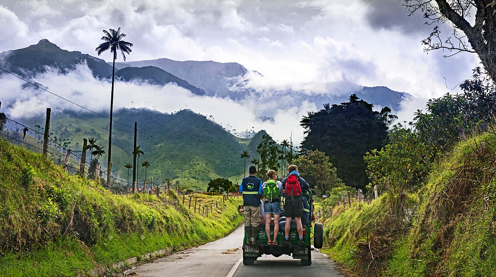
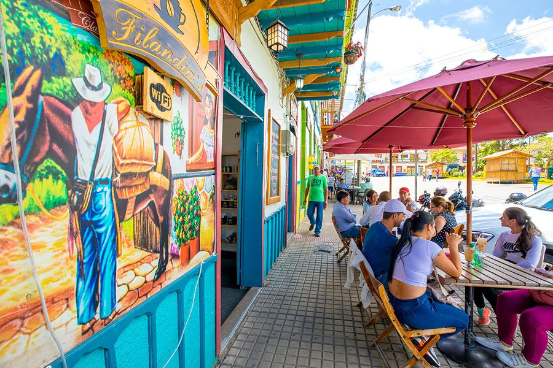
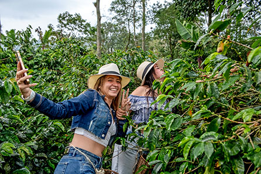

Dag 3–6 · Koffiestreek · Valle de Cocora · Waspalmen
In plaats van acht uur bus: een uur vliegen. Zo hou je de ochtend in Bogotá en kom je bij daglicht in Salento aan. Vanaf El Edén neem je een taxi naar Salento — ter plaatse te regelen, geen reservering nodig.
Ticket: ✓ geboekt — LATAM LA4292, vertrek 13:30, €283,63 voor twee, PNR RQHJRU. Ruimbagage van 23 kg per persoon zit erin. Vanaf El Edén een taxi naar Salento (±45 min) — ter plaatse regelen.
Uber naar El Dorado: Vanuit Botánico Hostel (Cra 2 #9-87) ±35 min. Uitchecken rond 10:15, Uber om 10:45 — dan ben je ruim op tijd voor een binnenlandse vlucht van 13:30.
Een van de mooiste wandelingen van Colombia: door een mistige jungleloop langs beken, hängebrug en uiteindelijk naar de open vallei met de imposante waspalmen — de nationale boom van Colombia en de hoogste palmbomen ter wereld (tot 60m).
BELANGRIJK: Wanneer je uit de jeep stapt, moet je NIET de hoofdweg naar de palmbomen volgen, maar RECHTS het veld inwandelen. Daar begint de hike door de jungle. Vraag dit na in het hotel — zij geven normaal een plannetje.
Route: Jungle loop → beken oversteken → hängebrug → kolibrie-tuin → dan uitkomen bij de waspalmen in de open vallei. Terug langs de hoofdweg.
Meenemen: Voldoende water (minstens 1,5L p.p.), snacks, regenjas (misty jungle!), goede wandelschoenen. Zonnecrème voor het open deel bij de palmbomen.
Terug: Wacht aan het beginpunt van de jeeps. Kan zijn dat je even wacht tot de jeep vol is.

's Ochtends staan er jeeps te wachten op het centrale plein. €2 p.p. voor de rit naar het begin van de wandeling. Regelen kan ook via het hotel.
Lonely Planet raadt expliciet aan een extra dag vrij te houden voor Filandia: hetzelfde kleurrijke koloniale karakter als Salento, maar met minder toeristen en betere panorama's. Een half uur rijden met een willy of collectivo vanaf het hoofdplein van Salento.
Mirador Colina Iluminada: uitkijktoren aan de rand van het dorp met zicht over de Valle del Cocora en op heldere dagen tot aan de besneeuwde toppen van Los Nevados. Kleine entree.
Het plein: pastelkleurige gevels rond de Iglesia María Inmaculada, rustiger dan Salento en met meer lokale cafés dan souvenirwinkels.
Mandenvlechters: Filandia staat bekend om zijn rieten manden. Een paar ateliers laten je het ambacht zien.
Paardrijden: Lonely Planet raadt hier expliciet een rit te paard aan door de golvende groene heuvels rond het dorp. Te regelen op de plaza.
Brulapen: in de Reserva Natural Barbas-Bremen daal je af in een bosrijke kloof waar troepen brulapen zitten.
Rough Guide: de Parque de Filandia is beter bewaard dan het plein van Salento, en de Torre Observatorio is een zeshoekige houten toren van 27 m, een kilometer west van het dorp.
Terug: laatste collectivo's rijden tot een uur of zes. Check de tijd bij vertrek.
Een voertuig brengt je naar La Carbonera op 3.400 m, in het nevelwoud, en van daar is het dertig kilometer naar beneden door opeenvolgende ecosystemen. Salento Cycling zegt het zelf, geciteerd in de Rough Guide: "you don't have to pedal once."
Boeken: salentocycling.com, C 6 No. 1–30 in Salento. Transport, begeleidingsvoertuig, gids, picknicklunch, materiaal en verzekering zitten in de prijs.
Lonely Planet-variant: 25 km vanaf de Andesdeling aan de zuidrand van PNN Los Nevados, terug over de Camino Nacional — het eerste pad dat ooit over de bergketen werd aangelegd. Een 4x4 brengt je er 's ochtends vroeg naartoe.
Kleding: gelaagd. Op 3.400 m in het nevelwoud is het fris, beneden warm. Handschoenen helpen bij een lange afdaling.
Niet op de dag na Cocora. Daarom staat Filandia ertussen.

Wandel door het kleurrijke dorpje Salento en klim naar de Mirador (Alto de la Cruz) voor een panoramisch uitzicht over de groene heuvels van de koffiestreek. Perfecte plek voor de zonsondergang.
📖 Lees meer: 🌅 Mirador →De directe bus van Salento naar Medellín vertrekt om 9u30 — wees om 9u aanwezig op het kleine busstation in het centrum van Salento. Geen overstap nodig. De rit duurt ±6u30 door het Andes-landschap — spectaculaire route.
Ticket kopen: Online via redBus aan te raden — het is een kleine bus met slechts 19 zitplaatsen. Kan ook aan het loket in Salento de avond tevoren (contant, pesos).
Route: Terminal de Salento → via Pereira → Terminal del Sur Medellín. Geen overstap. Vraag bij het instappen om bevestiging: "¿Va directo a Medellín?"
Busmaatschappij: Flota Occidental, lijn "Príncipe Star". Ook bussen om 12u30 en 22u15. Annuleerbaar.
Comfort: Neem wat snacks en water mee. Busrit door de Andes is mooi maar bergachtig. Zet de achtersteun van de stoel goed.
Aankomst Medellín: Terminal del Sur. Neem Uber of Cabify naar El Poblado (hotelwijk) — rit duurt ~20 min en kost ~COP 15.000–25.000.
Inchecken in het hotel en daarna de wijk verkennen. El Poblado is de meest internationale wijk van Medellín — levendig, veilig, vol restaurantjes en terrassen. Perfecte eerste avond om de stad te voelen.
Parque El Poblado: Kleine plein in het hart van de wijk — terrassen rondom, locals en toeristen gemengd. Goed startpunt voor je eerste avondwandeling.
Parque Lleras: 10 minuten te voet — levendiger plein met bars en restaurants. De nightlife van El Poblado draait hier om. Overdag ook aangenaam voor koffie.
Eten op dag 7: Carbon de Palo (goede vleesgrill in El Poblado), El Cielo (sterrenrestaurant als je luxe wil), of gewoon een lokaal tentje op het plein.
Let op: El Poblado is veilig, maar vermijd 's nachts de randgebieden. Uber gebruiken na 22u.

Een rondleiding op een werkende koffie-finca. Ontdek het volledige proces van koffieboon tot kopje: plukken, fermentatie, drogen, roosteren. Inclusief koffieproeverij. Een must in de koffiestreek!